A controller-free journey through a folklore-inspired world
Flow is an immersive interactive experience that takes guests on a spiritual journey through a folklore-inspired world. Utilizing a 270-degree curved projection screen and multiple body-tracking devices (Azure Kinect), players use full-body gestures to interact with the narrative — no controllers required.
Over 5 months, we conducted 70+ playtest sessions with 100+ guests, continuously iterating on the physical-to-virtual interactions based on user data. My primary contributions spanned technical environment art, custom shader development, and spatial UX design.
Experience Demo
Flow — Full Demo Video
Narrative & Experience Design
The goal was to create an emotionally resonant interactive story where guests intuitively use body gestures to help the main characters — without standard controllers.

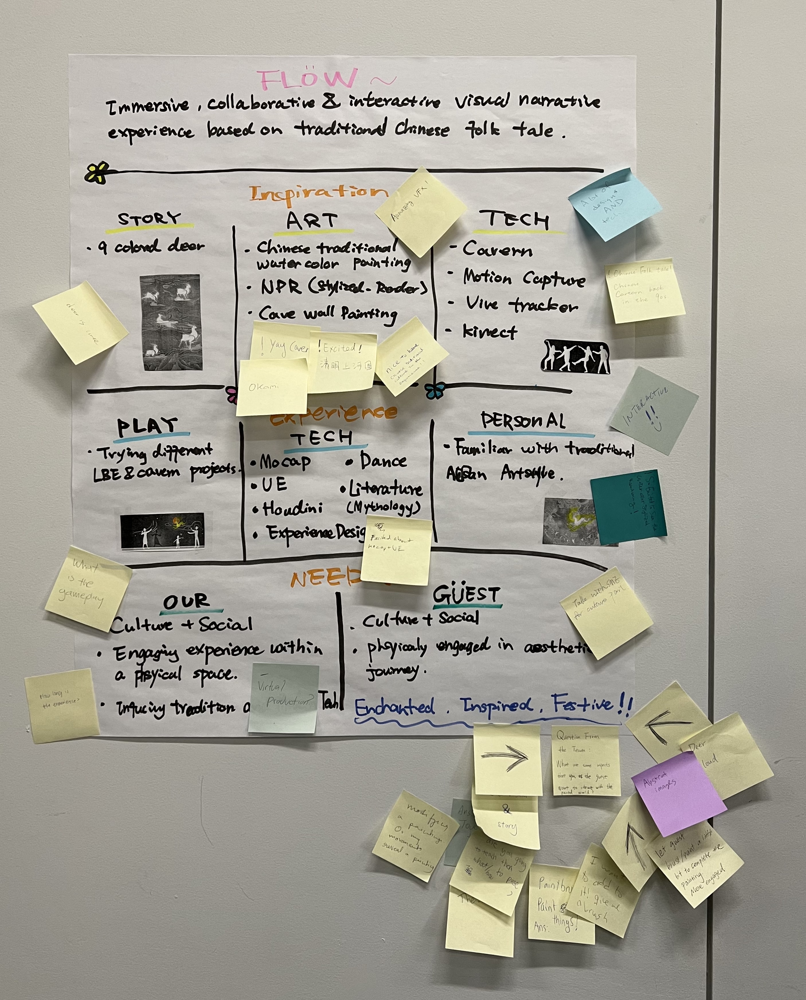
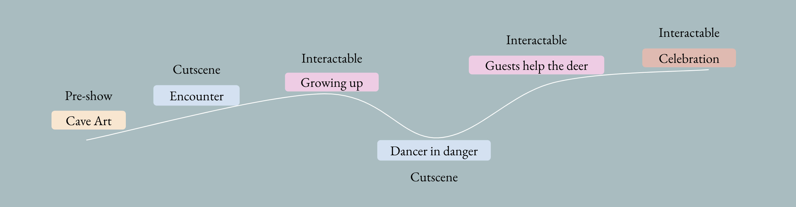
Spatial Partitioning: By dividing the massive 270-degree screen into three distinct interactive zones, we optimized the spatial layout to seamlessly match the pacing of the story and user inputs.
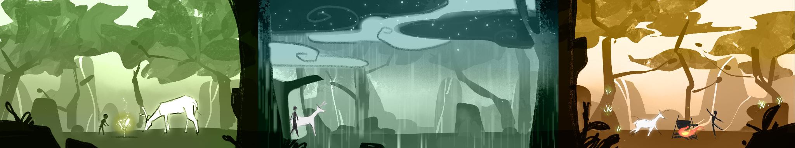
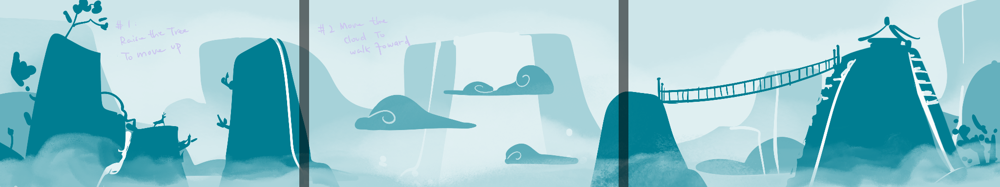
Challenge 1 — Lack of Intuitive Affordances
Early playtests revealed that guests felt stuck. The system lacked sufficient feedback, leaving players unsure of when and how to interact using their bodies.
Designed a live tutorial phase where a host guided guests into the environment, teaching them core gestures associated with elemental powers.
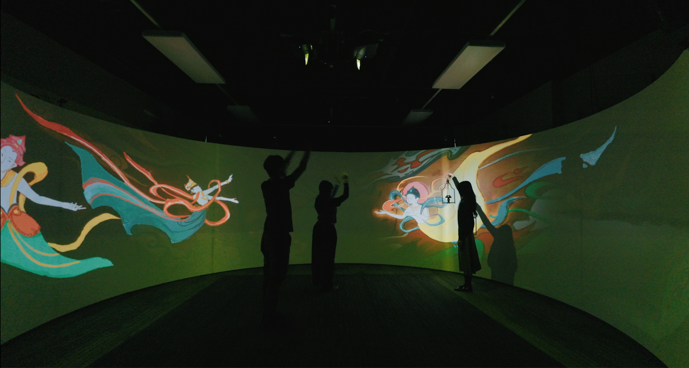
To provide non-intrusive UI cues, I developed and implemented a blinking outline shader on interactable objects. Combined with the virtual character's movement hints, this clearly indicated interaction opportunities and completely resolved user confusion.
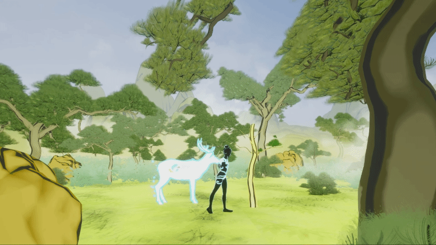
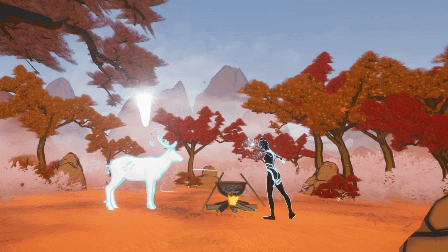
Challenge 2 — Scattered Focus in a 270° Environment
The massive scale of the curved screen distracted guests. Players often looked at the wrong sections, missing key narrative moments and failing to perform gestures in time.
I conceptualized and created a Dynamic Fog shader that dynamically controlled the player's Field of View (FOV) — subtly obscuring non-active areas and naturally guiding their attention to the active interaction zone.
Result: Combined with visual affordances, 100% of playtesters successfully navigated the experience without confusion.
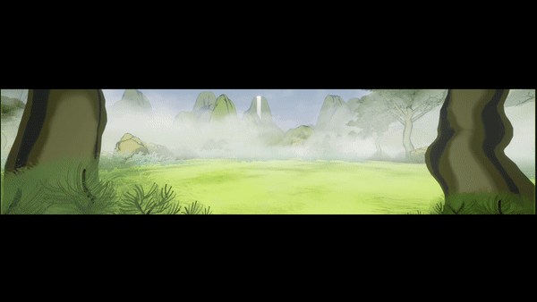
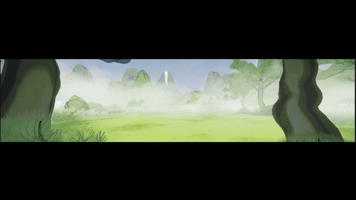
Playtesting & Cross-Functional Iteration
- Data-Driven Iteration: Co-facilitated 70+ playtest sessions with 100+ guests. Documented qualitative feedback and collaborated closely with engineers to refine the interaction mechanics and narrative pacing.
- Hardware & UX Integration: Brainstormed and tested paradigm-shifting inputs with the engineering team — such as attaching a Vive Tracker to a physical lantern, successfully bridging the gap between tactile props and virtual interactions.
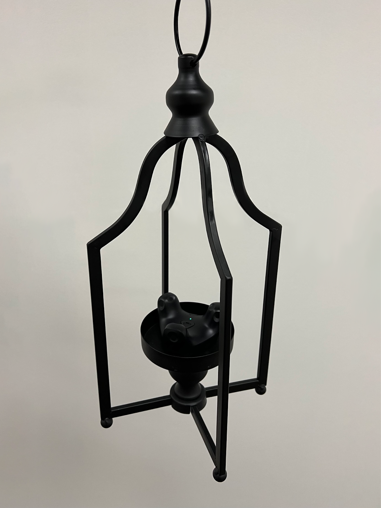
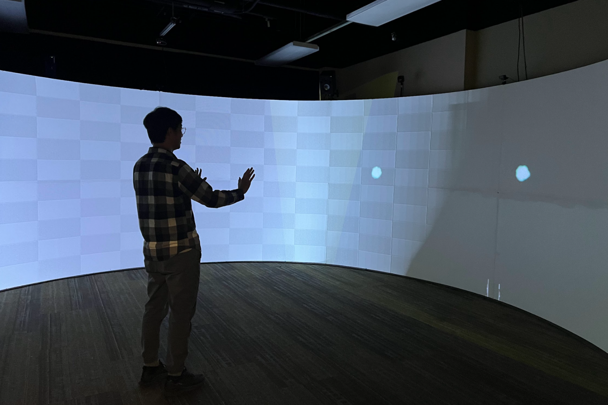
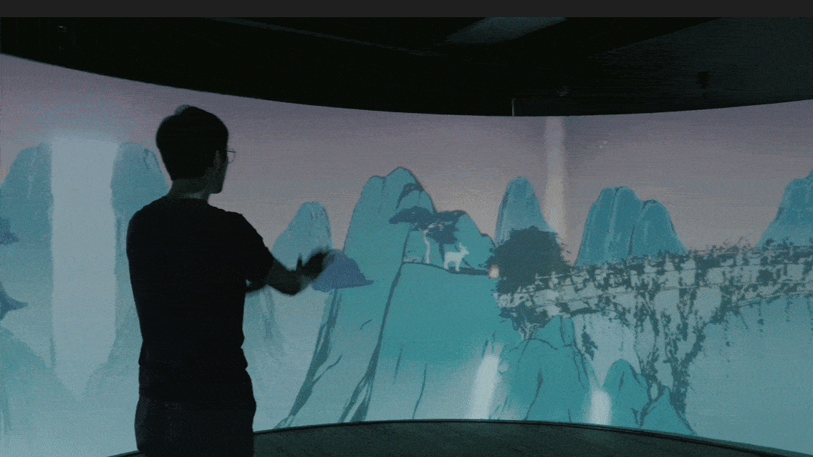
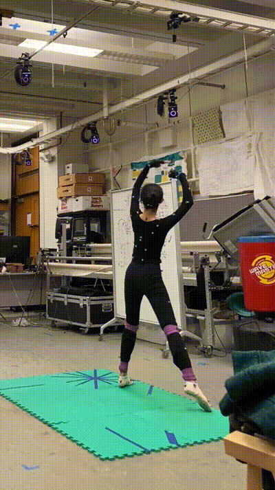
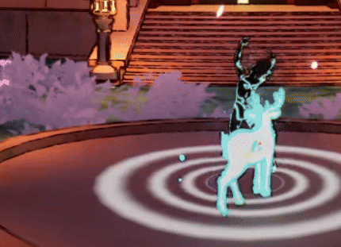
Immersive World-Building & Tech Art
- Environment & VFX: Built highly immersive scenes in UE5 and developed various visual effects (water shaders, weather systems, character VFX) to enhance the emotional storytelling.
- Procedural Workflows: Built procedural natural asset generators (mountains, rocks, ivy) using Houdini to rapidly populate the virtual world.
- Motion Capture Pipeline: Configured the initial pipeline to import and apply motion capture data into Unreal Engine for character animations.
Virtual Environment Setup
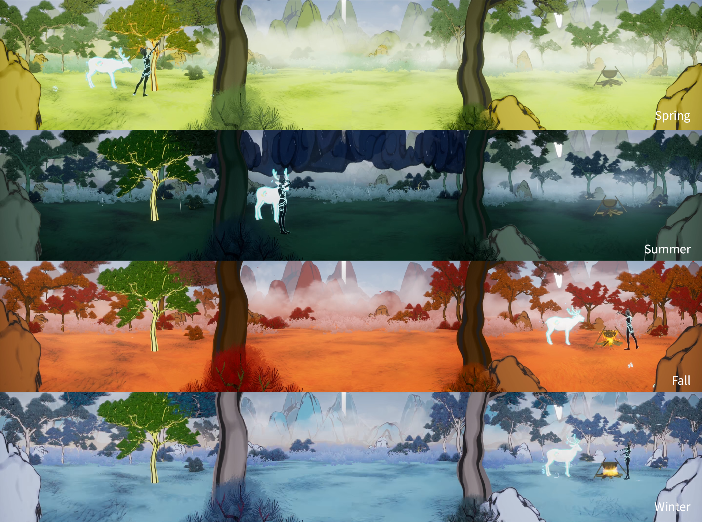
Final Interaction — Scene 3
Final Interaction Demo — Scene 3
VFX & Shader
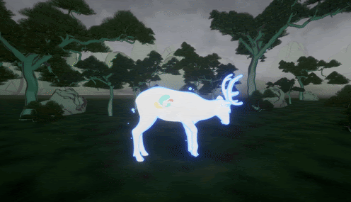
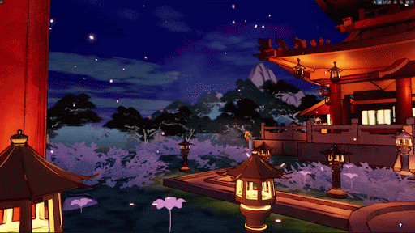
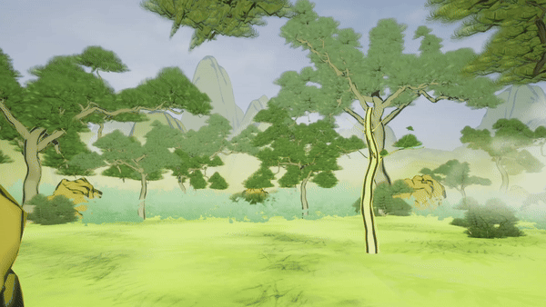
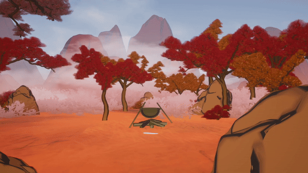
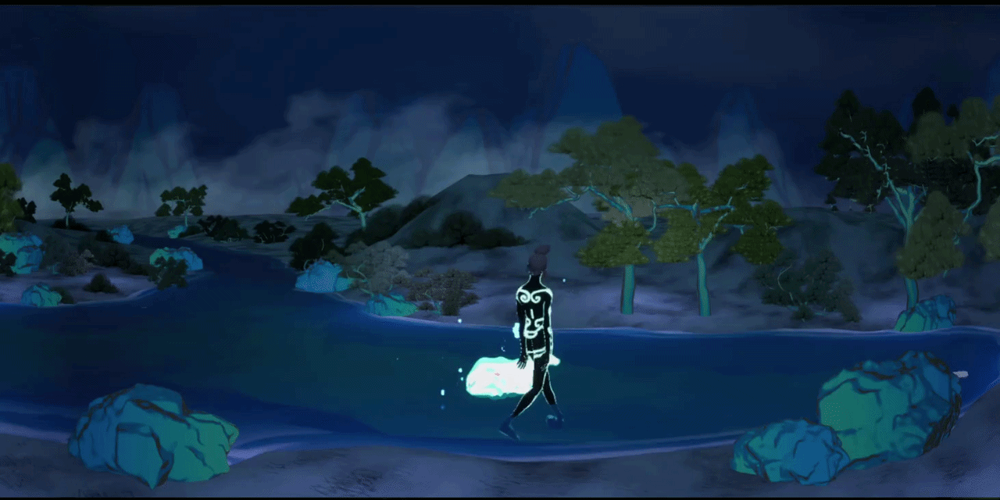
Procedural Natural Assets
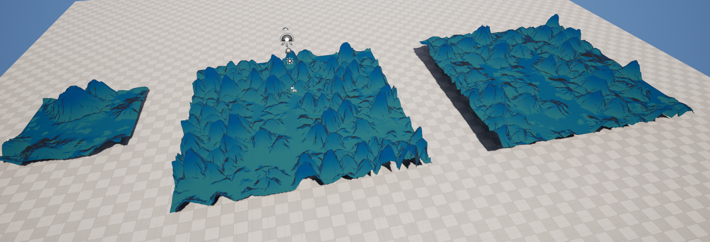
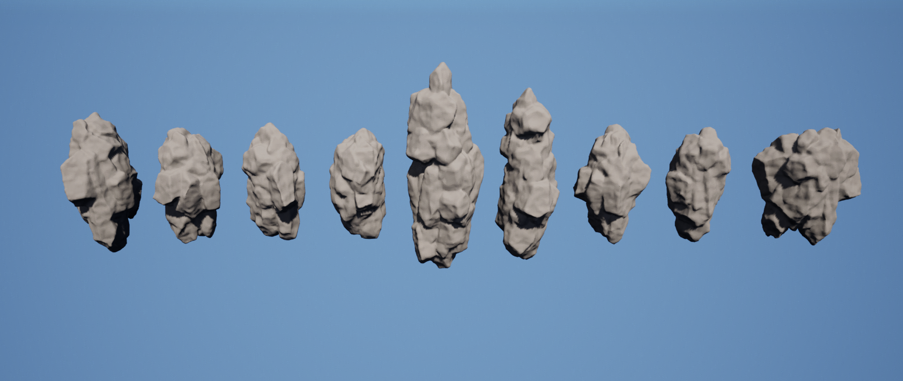
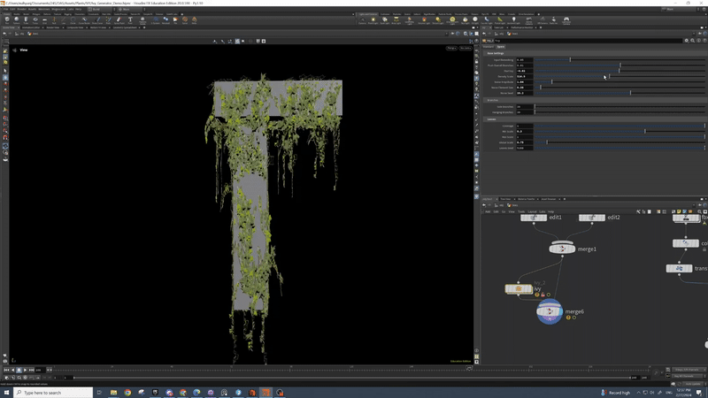